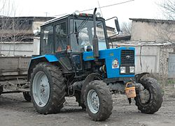
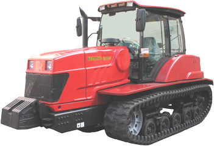
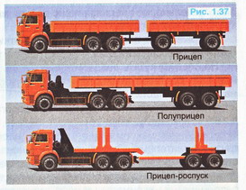
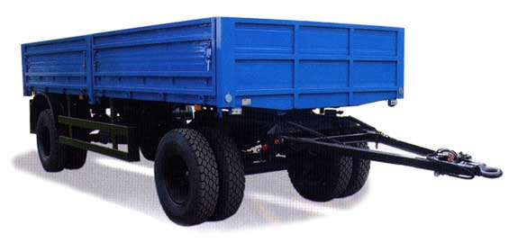
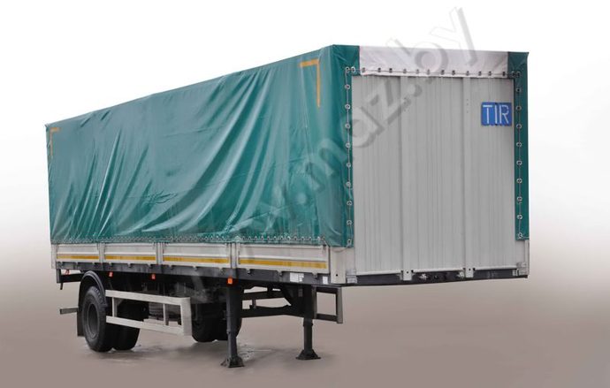
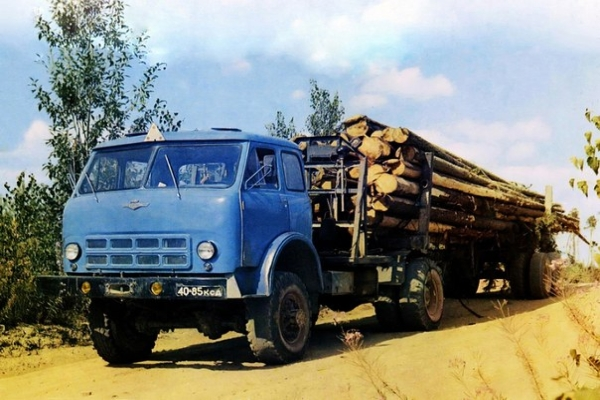
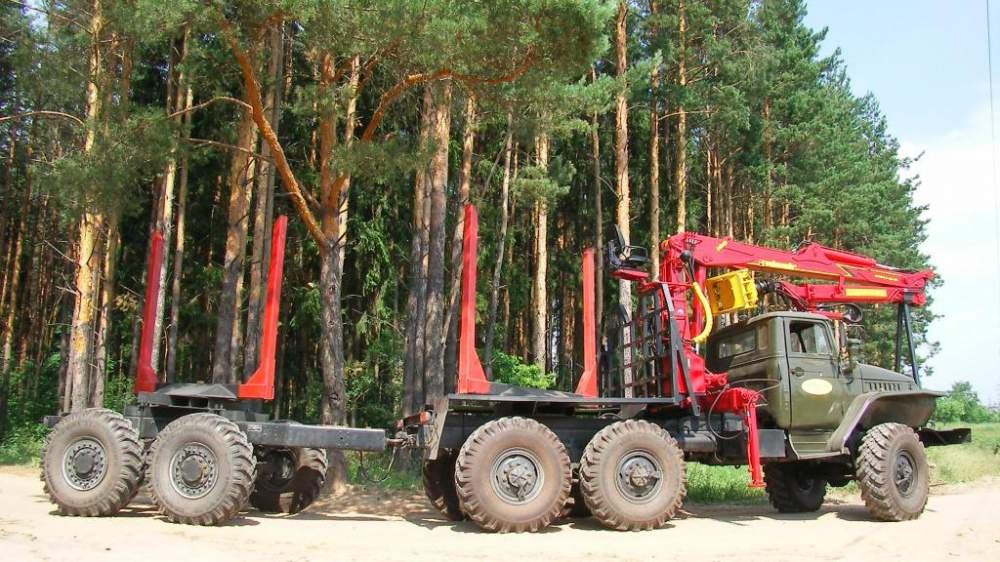
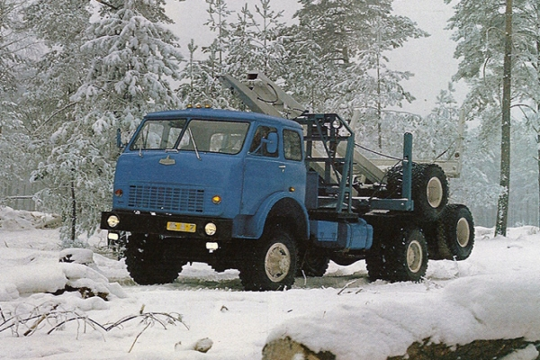

автопоезд — состав транспортных средств, состоящий из автомобиля (колесного трактора) и буксируемого им прицепа, прицепа-роспуска, полуприцепа (если не указано иное, далее — прицеп);
Легковой автомобиль с прицепом - тоже автопоезд.
Колесный трактор - обычный трактор. МТЗ выпускает именно их.

Колесный трактор с прицепом (тоже автопоезд). Фото с сайта wikipedia.org.
Почему именно колесный - потому что с колесами.
В отличие, например от гусеничного, который соответственно на гусеницах:

Гусеничный трактор. Фото с сайта mozyrmash.by.
Прицепы:

Сравнение различных прицепов. Фото с сайта ru-cars.net.

Обычный прицеп. Фото с сайта riat.ru.
Полуприцеп: "прицеп для фур". Почему полуприцеп, а не просто прицеп: Наверное, потому что прицеп - цепляй хоть к грузовику, хоть к трактору. А полуприцеп можно прицепить только к специальному "седельному" тягачу.

Полуприцеп. Фото с сайта maz.by
Прицеп-роспуск
Прицеп-роспуск - прицеп регулируемой длины. Зачем он такой нужен?: В разложенном виде он позволяет перевозить например длинные бревна или трубы.

Прицеп-роспуск в разложенном виде. Фото с сайта allspectech.com.
На обратном пути его можно сложить и ехать быстрее (легче маневрировать), чем с длиннющим прицепом сзади.

Прицеп-роспуск в сложенном виде. Фото с сайта ru.all.biz.

Прицеп-роспуск в сложенном виде, погруженный на автомобиль (буксируемый методом полной погрузки).
Фото с сайта
allspectech.com.